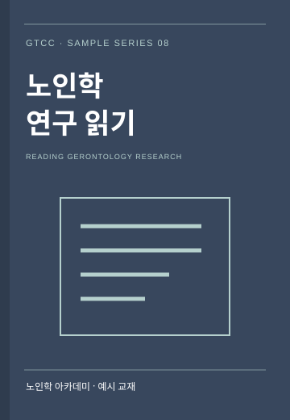

예시 교재 · 08
노인학 연구 읽기
자료와 질문을 연결하는 연습
제목·표지·아래 본문은 화면 구성을 위한 샘플입니다. 실제 발행 교재 또는 연구소의 확정 원고가 아닙니다.
자료를 읽기 전
자료의 제목과 작성 목적, 출처를 먼저 살펴보는 연습을 해봅니다. 이 예시 원고는 실제 연구 결과를 소개하는 논문이 아닌 학습 화면용 원고입니다.
핵심 질문 찾기
자료가 어떤 질문을 다루고 있는지 생각해 보세요. 중요한 문장과 이해가 필요한 표현을 구분해 적어보면 토론을 준비하는 데 도움이 됩니다.
나의 질문 정리
읽은 내용과 개인의 생각을 구분해 정리해 보세요. 추가로 확인하고 싶은 출처와 다른 사람에게 묻고 싶은 질문을 적어봅니다.